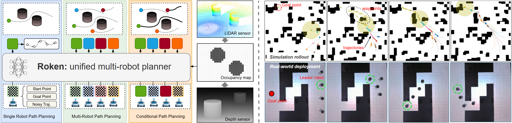
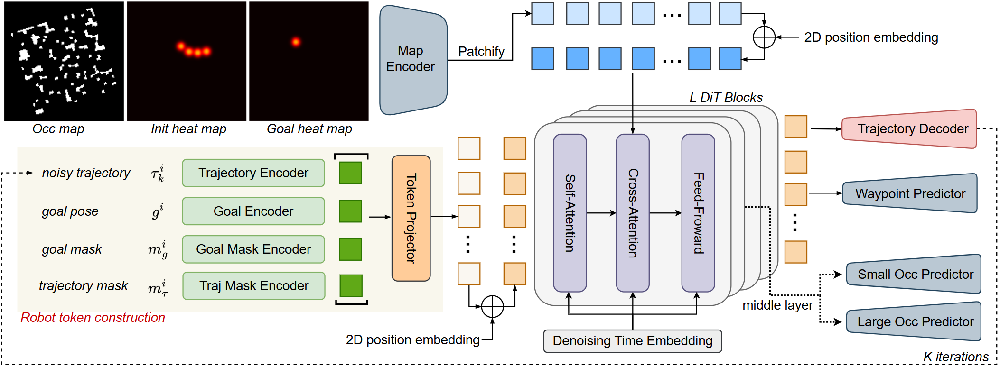
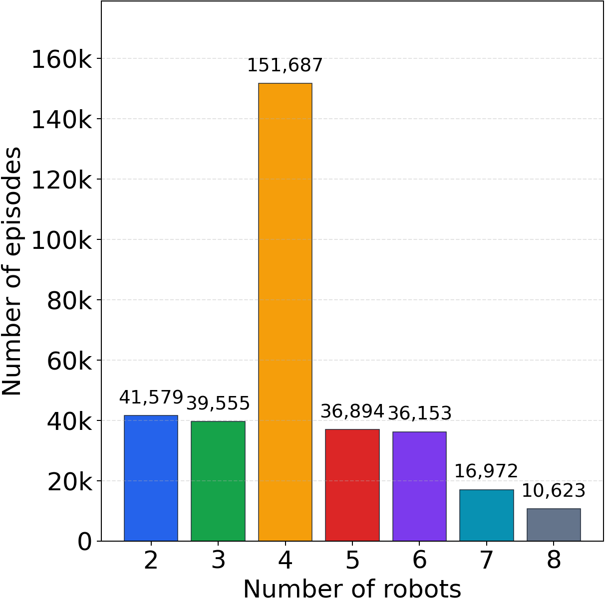
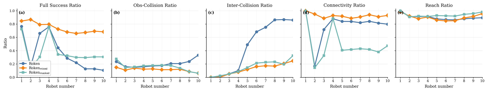
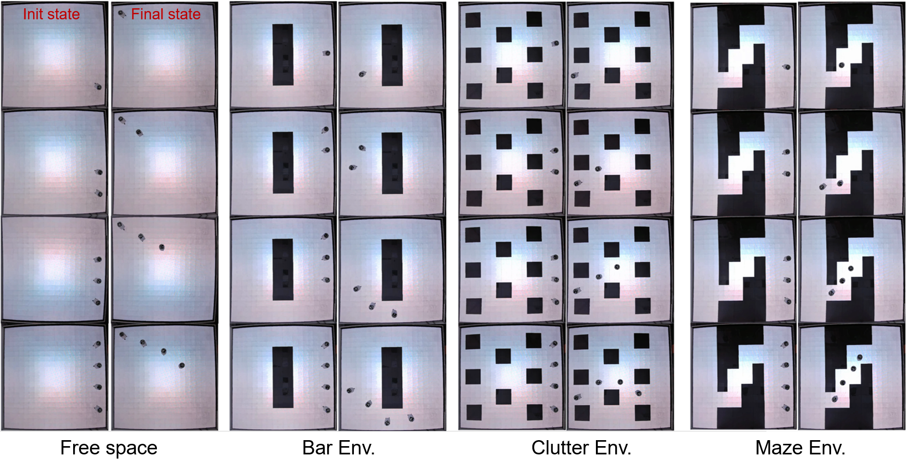
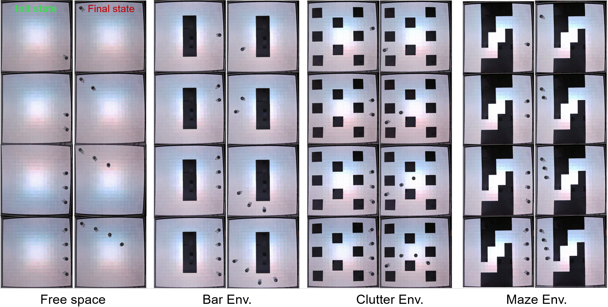
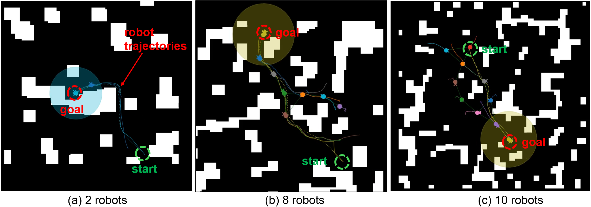
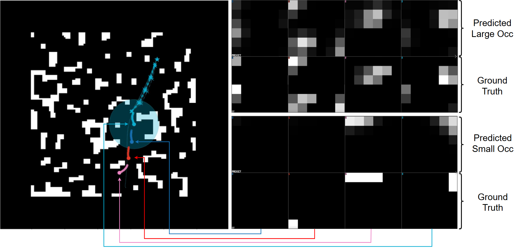
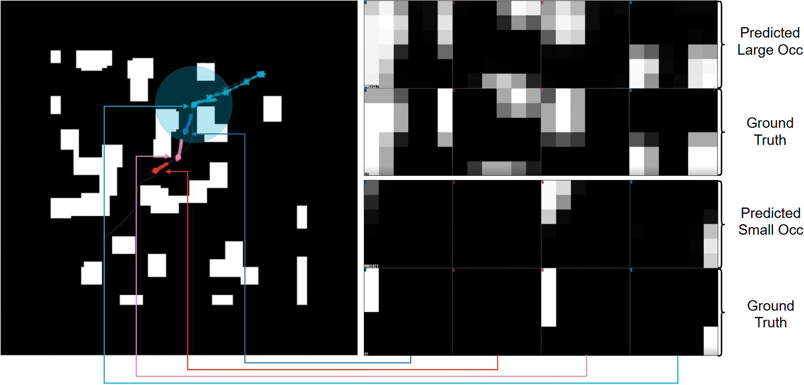
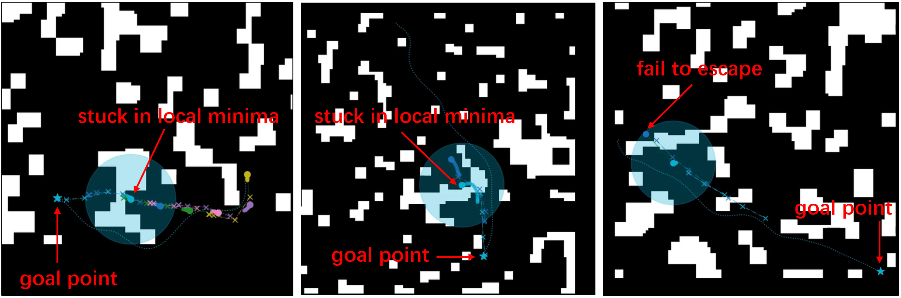

Project page preview
Robots as Tokens: Unified Diffusion Transformer for Coordinated Multi-Robot Trajectory Generation
Roken

Abstract
Multi-robot navigation requires teams to reach goals while maintaining safety and communication connectivity in cluttered environments. Roken studies whether coordinated multi-robot trajectories can be learned as a conditional generative distribution and produced in a feed-forward denoising rollout. The model represents each robot as a token, lets robot tokens interact through self-attention, and cross-attends to map tokens for spatial awareness.
With auxiliary supervision for local occupancy reconstruction and long-horizon waypoint prediction, Roken learns coordinated trajectory generation across different team sizes. Experiments show strong performance on connectivity-constrained goal navigation, scalability across varying robot counts, and real-world deployment with physical robots.
Method Overview
Roken is an end-to-end diffusion transformer for multi-robot trajectory generation. Each robot token contains the robot state, noisy future trajectory, goal condition, and generation mask. Robot tokens communicate through transformer self-attention, while map tokens provide occupancy context through cross-attention.

The training objective combines trajectory denoising with auxiliary tasks for local occupancy reconstruction and waypoint prediction. These signals make map conditioning more effective and encourage collision-aware, goal-directed team behavior.

Main Results
Roken is evaluated on unseen cluttered environments under a strict full-success metric that requires goal reaching, obstacle avoidance, inter-robot collision avoidance, and communication connectivity.
- Roken RL reaches a full success ratio of 0.790, with 0.920 connectivity and 0.947 reach ratio.
- Mixed-team training improves scalability across team sizes, with evaluation spanning 1 to 10 robots.
- The same model can be used for single-robot planning, coordinated team planning, and conditional generation with fixed robot tokens.


Qualitative Results
Additional examples show Roken's rollout behavior, deployment setup, occupancy reconstruction ability, and representative failure cases.




Limitations
Roken can fail in local-minimum scenarios that are underrepresented in the training data. Future improvements may include dataset enhancement, reinforcement learning post-training, and online safety shielding for real-world deployments.

BibTeX
@article{roken2026,
title={Robots as Tokens: Unified Diffusion Transformer for Coordinated Multi-Robot Trajectory Generation},
author={Author list to be added},
journal={Project page preview},
year={2026}
}